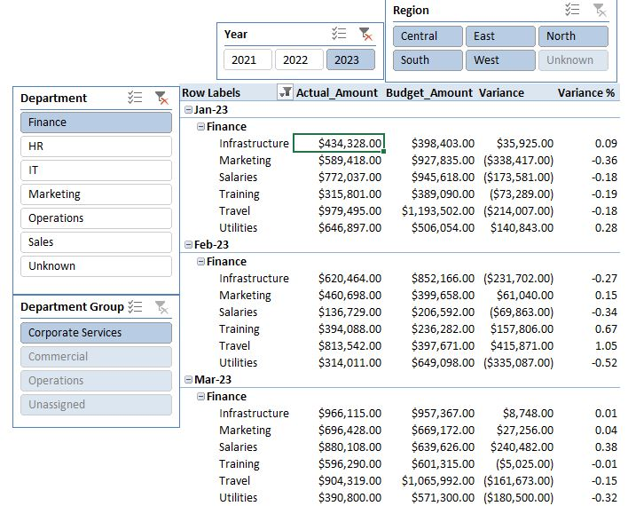
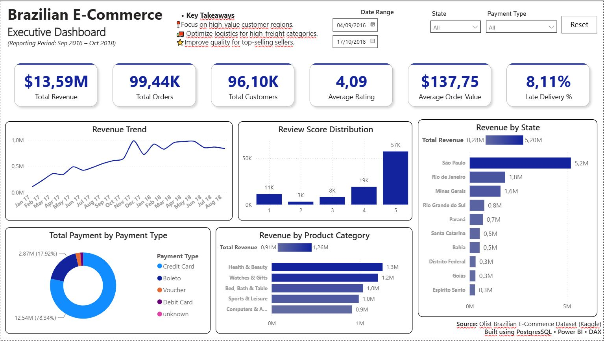

EXCEL WORKBOOK
Budget vs Actual
Compare spending with budget by month, department, region, and category, with variance measures and interactive filters.
Download Excel fileDATA & BUSINESS ANALYTICS
Hi, I’m Oscar Zapata.
I combine business experience—especially in finance, sales management, inventory, and procurement—with Excel, Power BI, and SQL to support clear, actionable business decisions. I am currently studying statistics more deeply, and advancing my Python skills so I can provide more advanced analysis and predictive analytics.
Word document (.docx)
WHAT I DO
I develop reports, data models, dashboards, and performance indicators that help teams understand commercial, financial, and operational performance. My work begins with a business question: what does the team need to know, how can we measure it, and what data do we have to answer it?
I have worked with sales, margins, budgets, purchasing, and inventory data, integrating information from ERP and CRM systems. I can access the databases behind those systems, identify the right tables and data, and use them for business analysis. This experience helps me connect users’ needs with reports they can understand and use.
HOW I WORK WITH THE DATA
I start by finding the data the business question needs. That may mean combining Excel files with data from ERP, CRM, and other business systems, or working with databases such as Microsoft SQL Server and PostgreSQL. For database sources, I extract the relevant data with SQL queries or Power Query.
Before analyzing it, I check the data’s integrity, clean inconsistencies, and format it so the measures are reliable. With a sound dataset, I can explore the business question using Excel PivotTables and dashboards, Power BI semantic models, and, when appropriate, Python for statistical or predictive analysis.
Once the analysis answers the question, I look for ways to automate the report’s refresh so it is easier to update and maintain.
CASE STUDIES

CASE STUDY 01 · POSTGRESQL + EXCEL
This case study explores how marketplace transactions can become a clear view of sales activity and the customers and sellers behind it. I used a 10,000 order-item sample from the Olist dataset, loaded the source CSVs into a local PostgreSQL database, and connected Excel to that database.
I kept each sold order item as the analytical grain. In Power Query, I combined order items with orders, customers, and sellers using their IDs, while retaining those technical keys and adding readable customer and store names. The consolidated FactSales table brings merchandise sales, freight, order status, and customer and seller details into one reporting-ready dataset.
From that dataset, I created PivotTables for merchandise sales, freight value, order count, store count, and the top 10 customers and sellers by sales. I then built an Excel dashboard in Brazilian real (BRL) with native charts linked to the PivotTables, so the figures can be traced back to the analysis and refreshed when the source data changes.
Download the Excel case studyThe workbook includes saved results. Refreshing its database connection requires a compatible local PostgreSQL setup.
FINANCE WORK · EXCEL
Examples that reflect the financial planning, performance, and commercial analysis I have done in previous roles.

Compare spending with budget by month, department, region, and category, with variance measures and interactive filters.
Download Excel file
Link historical statements to projected revenue, costs, expenses, personnel, loans, and financial ratios.
Download Excel fileBring marketplace data from PostgreSQL through Power Query into sales analysis, PivotTables, and an Excel dashboard.
Download Excel file
Review sales and gross profit by client type and month, with product rankings and supporting monthly data.
Download Excel fileDATA ANALYSIS · DASHBOARDS
Power BI examples showing how I turn business data into clear, interactive reporting.

Explore marketplace revenue, orders, customers, ratings, delivery performance, and product categories.
Download Power BI file
Compare prior sales with budget scenarios and examine differences by month, customer, and salesperson.
Download Power BI file
Connect sales, costs, operating margin, and inventory indicators in a single reporting view.
Download Power BI fileCV & CONTACT
Looking for support with Power BI dashboards, business performance analysis, or consolidating financial and commercial information?
Explore my experience in my CV, or get in touch to discuss a professional opportunity or a data analysis project.